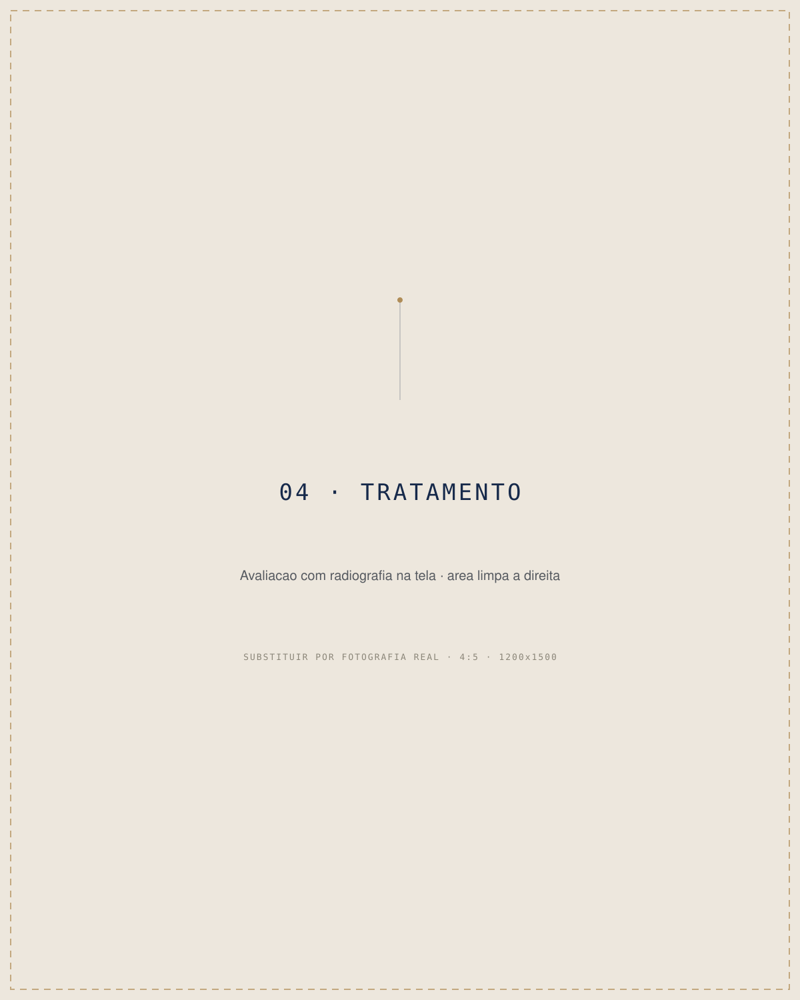
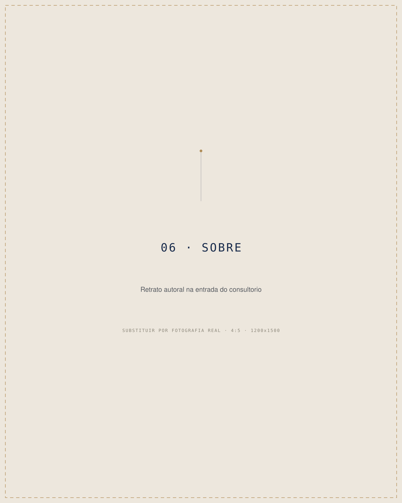
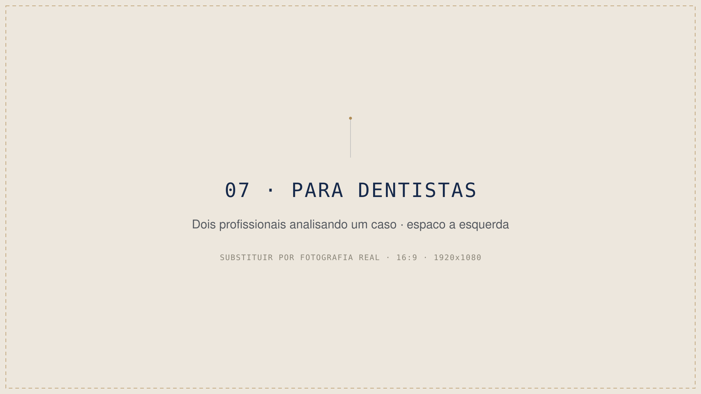

Cirurgião-dentista • Natal, RN
Seu dente merece ser preservado.
Tratamento de canal moderno e cuidadoso para aliviar a dor, recuperar sua saúde bucal e preservar o seu dente natural.
- Especialidade
- Endodontia mecanizada em Natal
- Experiência
- Mais de 8 anos cuidando e preservando dentes
02 — Sinais
A dor pode começar pequena.
O cuidado não precisa esperar.
- 01Dor ao mastigar
- 02Sensibilidade que não passa
- 03Desconforto com quente ou frio
- 04Dente escurecido
- 05Inchaço ou dor pulsante
- 06Indicação anterior para tratamento de canal
Esses sinais precisam ser avaliados por um profissional. Quanto antes a causa for identificada, maiores podem ser as possibilidades de preservar o dente.
Somente uma avaliação clínica pode determinar o diagnóstico e o tratamento indicado.
03 — Manifesto
Antes de substituir, existe a possibilidade de cuidar. Antes de perder, existe a possibilidade de preservar.
O tratamento endodôntico busca tratar a parte interna do dente, controlar a infecção e permitir que ele continue cumprindo sua função.
04 — Tratamento
Precisão em cada etapa
do tratamento.

-
01
Avaliação
Entendimento dos sintomas, do histórico e da condição do dente.
-
02
Diagnóstico
Análise clínica e dos exames necessários para definir a conduta.
-
03
Tratamento
Limpeza e tratamento dos canais com técnicas e instrumentos adequados.
-
04
Preservação
Orientações e acompanhamento para devolver função e segurança ao paciente.
A tecnologia não substitui o cuidado. Ela ajuda o profissional a trabalhar com mais precisão e previsibilidade.
05 — O que o paciente sente
Conhecimento técnico para tratar.
Cuidado humano para tranquilizar.
- Explicação clara antes de cada etapa
- Atendimento individualizado
- Planejamento baseado no diagnóstico
- Técnicas atuais de endodontia
- Foco na preservação do dente natural
- Comunicação direta pelo WhatsApp

06 — Sobre
Há mais de 8 anos,
uma escolha orienta cada
atendimento: preservar.
Luiz Mendes é cirurgião-dentista e atua há mais de oito anos no cuidado da saúde oral, com atenção especial à endodontia e à preservação dos dentes naturais.
Seu atendimento combina avaliação cuidadosa, comunicação clara e técnicas modernas para que cada paciente compreenda o próprio tratamento e se sinta seguro durante o processo.
- Formação
- Especialização
- CRO
- Atualização
07 — Parceria profissional
Endodontia mecanizada
dentro do seu consultório.
Uma parceria para clínicas e cirurgiões-dentistas que desejam oferecer atendimento endodôntico aos seus pacientes com suporte profissional e organização.
- Atendimento no consultório parceiro
- Comunicação alinhada com o dentista responsável
- Mais comodidade para o paciente
- Fluxo de atendimento organizado
- Continuidade do relacionamento entre clínica e paciente

08 — Experiências
O que os pacientes contam.
Espaço reservado para experiências reais de pacientes.
-
de 5
09 — Onde atendo
Seu atendimento
no coração de Natal.
Luiz Mendes | Cirurgião-Dentista
Endodontista · Cirurgião-dentista
Tirol Way OfficeAvenida Senador Salgado Filho, 1718 — Tirol
Natal — RN, CEP 59022-000
Próximo ao Shopping Midway Mall
- Sala
- Atendimento
Mapa carrega ao chegar nesta seção.
10 — Dúvidas
Perguntas frequentes.
Quando um tratamento de canal pode ser necessário?
Quando a parte interna do dente, onde ficam os vasos e os nervos, é atingida por infecção ou inflamação — em geral por cárie profunda, trauma ou fratura. Os sintomas variam bastante, e existem casos sem sintoma nenhum. Só o exame clínico e as imagens mostram o que está acontecendo.
Tratamento de canal dói?
O procedimento é feito com anestesia local. Boa parte do desconforto que as pessoas associam ao canal vem da inflamação que já existia antes do tratamento. A resposta de cada organismo é individual, e isso é conversado abertamente na avaliação.
Quanto tempo pode durar o tratamento?
Depende do dente, do número de canais e da condição em que ele chega. Alguns casos se resolvem em uma sessão, outros pedem mais de uma. Essa estimativa é dada depois da avaliação — nunca antes.
O que é endodontia mecanizada?
É o tratamento de canal feito com instrumentos acionados por motor, com controle de velocidade e força, em vez do preparo exclusivamente manual. O objetivo é um preparo mais uniforme dos canais. A técnica é uma ferramenta: quem conduz o caso é o profissional.
Posso trabalhar normalmente depois do procedimento?
Na maior parte das situações, sim. Pode haver sensibilidade nos primeiros dias, principalmente ao mastigar. As orientações do pós-tratamento são passadas caso a caso.
Como saber se meu dente pode ser preservado?
Depende de quanto da estrutura do dente ainda existe e da condição dos tecidos em volta. É exatamente isso que a avaliação responde. Nem todo dente pode ser preservado — e essa resposta é dada com honestidade.
É necessário fazer uma avaliação antes?
Sim. Nenhuma conduta é definida por telefone, mensagem ou foto. A avaliação clínica é o que permite identificar a causa.
Como agendar um atendimento?
Pelo WhatsApp. Conte o que está sentindo, há quanto tempo, e se já recebeu alguma indicação de tratamento. Isso ajuda a organizar o atendimento.
Cuidar agora pode ser o primeiro passo para preservar o seu dente.
Converse diretamente pelo WhatsApp, explique o que está sentindo e solicite uma avaliação.
Falar com Luiz MendesEm situações de urgência ou sintomas intensos, procure atendimento odontológico adequado.